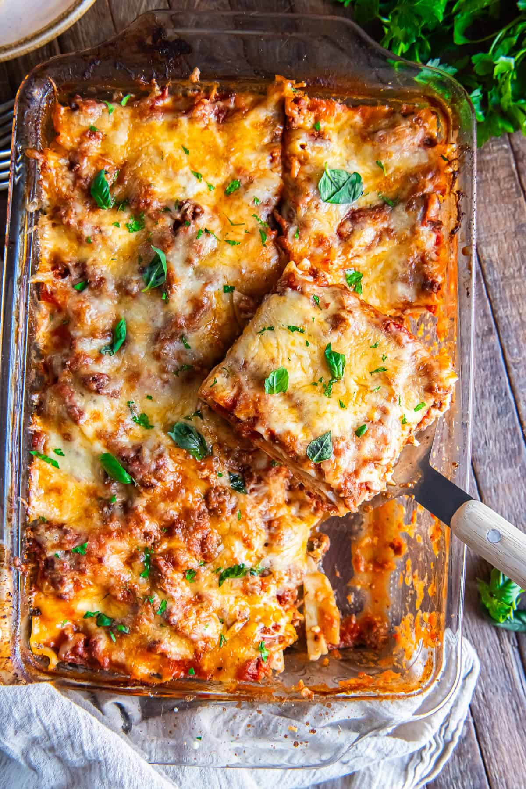

Here is a classic beef and ricotta lasagne recipe that serves 8 people and takes about 90 minutes to make. It balances a rich meat sauce with a creamy cheese filling and melted mozzarella.
Meat Sauce
Cheese Mixture and Assembly
Brown the meat: Heat olive oil in a large skillet or Dutch oven over medium-high heat. Add the ground beef, sausage, and diced onion, cooking for 7 to 8 minutes until the meat is browned and no pink remains.
Simmer the sauce: Drain any excess grease, then stir in the minced garlic, tomato paste, crushed tomatoes, Italian seasoning, salt, and pepper. Bring to a boil, reduce the heat to low, and simmer uncovered for 20 minutes.
Boil the noodles: While the sauce simmers, boil the lasagne noodles in salted water according to package directions until al dente. Drain and lay them flat on a lightly oiled baking sheet so they do not stick (skip this step if using oven-ready noodles).
Mix the cheeses: In a medium bowl, combine the ricotta cheese, beaten egg, 1/2 cup of the Parmesan, parsley, and a pinch of salt and pepper. Stir until smooth.
Preheat the oven: Set your oven to 375F (190C).
Create the base: Spread 1 cup of meat sauce evenly across the bottom of a 9x13-inch (23x33 cm) baking dish.
Build the layers: Place 4 noodles side-by-side over the sauce. Spread half of the ricotta mixture over the noodles, sprinkle with 1 cup of mozzarella, and top with 1.5 cups of meat sauce.
Repeat: Add 4 more noodles, the remaining ricotta mixture, another 1 cup of mozzarella, and 1.5 cups of meat sauce.
Finish the top: Place the final 4 noodles on top. Cover with the remaining meat sauce, the last 1 cup of mozzarella, and the remaining 1/2 cup of Parmesan.
Bake covered: Spray a piece of aluminum foil with cooking spray (to prevent cheese from sticking) and cover the dish tightly. Bake for 25 minutes.
Brown the top: Remove the foil and bake uncovered for another 20 minutes until the cheese is bubbly and golden brown.
Rest before slicing: Let the lasagne cool on the counter for 15 minutes before cutting. This resting time allows the layers to set so slices hold their shape.